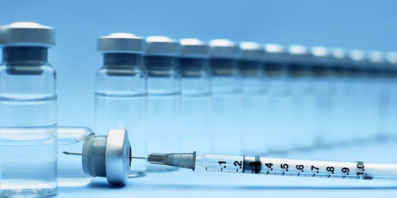

VAKSIN PALSU

Oleh Agnes Aristiarini
Hari-hari ini, berita vaksin palsu sudah menghilang dari media. Kehadirannya tergusur oleh hebohnya Mudik Lebaran, bom bunuh diri, dan kini arus balik. Padahal, ini adalah kejahatan kemanusiaan luar biasa, karena korbannya anak-anak, dengan membahayakan kesehatan sekaligus merampas masa depan mereka.
Imunisasi atau vaksinasi sudah terbukti ampuh melawan penyakit di era kesehatan modern ini. Organisasi Kesehatan Dunia (WHO) mengandalkan imunisasi sebagai metode intervensi preventif untuk meningkatkan derajat kesehatan.
Adalah Edward Jenner, penemu teknik vaksinasi cacar, yang berjasa mengalahkan penyakit yang sudah dikenal di Mesir lebih dari 300 tahun lalu dan sempat mengancam 60 persen populasi global. Dunia akhirnya bebas penyakit cacar tahun 1978, setelah 11 tahun WHO memulai program imunisasi intensif pada tahun 1967.
Jenner merintis pencegahan penyakit cacar (smallpox) dengan menularkan cacar sapi (cowpox) pada anak. Metode ini dipublikasikan tahun 1797 dan mengilhami Louis Pasteur membuat vaksin pencegah antraks 75 tahun kemudian, juga Robert Koch yang membuat vaksin tuberkulosis. Berbeda dengan Jenner, keduanya memakai bakteri yang dilemahkan.
Sejak saat itu, imunisasi menjadi andalan mengatasi berbagai penyakit infeksi. Dalam rentang dua abad dari sejak metode vaksinasi ditemukan, berbagai penyakit bisa dicegah dengan vaksin: polio, hepatitis, difteri, pertusis, tetanus, influenza, meningitis, campak, gondongan, rubela, dan masih banyak lagi.
Tidaklah mengherankan bila dalam Millennium Development Goals (MDGs) yang kini diteruskan dengan Sustainable Development Goals (SDGs) untuk menghapus segala bentuk kemiskinan itu, imunisasi menjadi salah satu cara untuk mencapai tujuan. Imunisasi berperan meningkatkan kesehatan ibu dan anak, termasuk menurunkan angka kematian bayi.
Di Indonesia, zaman Orde Baru, angka cakupan imunisasi pernah dilaporkan lebih dari 80 persen di seluruh Indonesia. Padahal, kenyataannya hanya 60 persen. Akibatnya, 40 persen anak yang tidak diimunisasi menjadi "bom waktu" yang meledak tahun 2005, saat virus polio liar terbawa ke Indonesia. Tahun itu, polio telah menyerang lebih dari 150 anak di delapan kabupaten di empat provinsi. Korbannya adalah anak-anak usia balita yang tak terlindungi vaksin.
Padahal, vaksin polio temuan dr Jonas Salk tahun 1952, signifikan menurunkan kasus polio di Eropa Barat dan Amerika Serikat. Dari 76.000 kasus polio tahun 1955 turun menjadi 1.000 kasus tahun 1967 (Laurie Garrett, The Coming Plague: Newly Emerging Diseases in a World Out of Balance, 1994).
Dengan demikian, peredaran vaksin palsu pada sedikitnya 12 merek vaksin dan sudah berlangsung 13 tahun itu akan menjadi "bom waktu" baru. Apalagi dengan berbagai alasan, pemerintah tidak juga segera mengumumkan rumah sakit, lembaga layanan kesehatan, ataupun tempat praktik pribadi yang diketahui masuk jalur peredaran vaksin palsu.
Kepanikan mungkin saja terjadi begitu ada pengumuman. Namun, hal ini bisa dicegah bila pemerintah juga memberikan opsi jalan keluarnya: vaksinasi ulang dan gratis di berbagai lembaga kesehatan pemerintah.
Masyarakat, yang jelas-jelas dirugikan oleh buruknya pemerintah dalam menjalankan tugasnya mengawasi peredaran obat dan vaksin, berhak untuk mendapatkan informasi yang transparan sekaligus solusi yang bertanggung jawab.
Dalam hal ini, anak-anak harus menjadi fokus utama agar tidak menjadi korban "bom waktu" berikutnya, selain menghukum seberat-beratnya para pelaku vaksin palsu.
cuplikan artikel di abil dari Kompas edisi 13 Juli 2016, di halaman 14 dengan judul "Lagi, Vaksin Palsu".